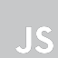
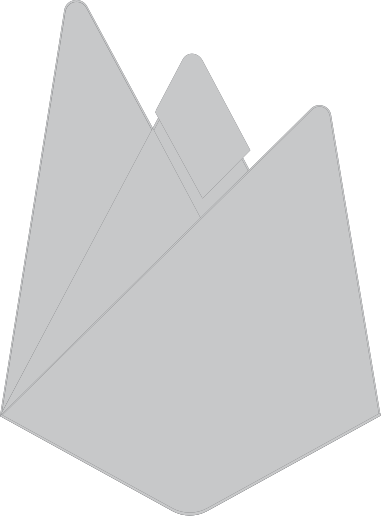

Conhecimento nas principais tecnologias do mercado
- 
-

- 
-

Bem-vindo ao projeto Homem-Aranha Multiverso! Este projeto é uma homenagem a todas as versões do Homem-Aranha, permitindo que você navegue por diferentes filmes e universos do personagem icônico.
Bem-vindo, aventureiro! Você está prestes a embarcar em uma jornada emocionante pelo Mundo Invertido, onde os perigos espreitam a cada esquina e os desafios são apenas o começo da sua aventura. Prepare-se para entrar no universo de Stranger Things e Dungeons & Dragons!
Este é um simulador de piano virtual desenvolvido com HTML, CSS e JavaScript. O projeto permite tocar notas musicais clicando nas teclas do piano ou usando o teclado físico do seu computador. Inclui controles de volume e a opção de exibir ou ocultar as teclas.
Sou DEV com especialização em Banco de Dados e uma paixão por explorar as mais diversas linguagens de programação. Ao longo da minha carreira, tenho atuado como Coordenador e Professor de Informática, com foco em desenvolver cursos e conteúdos nas áreas de Programação, Web Design, Design Gráfico, além de Manutenção de Computadores.
Digital Innovation One. Fev 2024.
O que é versionamento de código, Git e GitHub. Como instalar e configurar o Git em diferentes sistemas operacionais e como autenticar via Token e SSH. Como manusear repositórios, indo desde a criação e clonagem até o gerenciamento de branches, passando por todas as etapas de salvar, desfazer e sincronizar alterações com o repositório remoto.
Digital Innovation One. Fev 2023.
Lab prático sobre colaboração em projetos de código aberto.
Digital Innovation One. Fev 2023.
Otimização dos estudos com os Roadmaps DIO, construindo um caderno de estudos com a ferramenta Notion.
Danki Code. Concluído em 2022.
Estudo aprofundado do Firebase como banco de dados em tempo real, incluindo autenticação de usuários e integração com aplicativos web.
Prepara Cursos. Concluído em 2022.
Curso de C# com foco em fundamentos de programação orientada a objetos e desenvolvimento de aplicações desktop.
Danki Code. Concluído em 2022.
Curso voltado para a prática do inglês técnico aplicado à programação, abordando termos e expressões comuns no desenvolvimento de software.
Prepara Cursos. Concluído em 2021.
Desenvolvimento de sites e aplicações web com HTML, CSS e JavaScript, incluindo conceitos de design responsivo e interatividade.
Prepara Cursos. Concluído em 2021.
Curso sobre ferramentas e técnicas de design gráfico com ênfase no uso de Photoshop e CorelDraw para criação visual e manipulação de imagens.
Estou disponível para serviços e novas conexões. Contate-me via e-mail e conecte-se comigo através das minhas redes sociais.